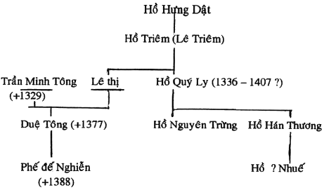

Góp Thêm Về Phổ Hệ Tây Sơn Và Chân Dung Anh Em Họ
Từ khi học giả Trần Trọng Kim nâng dòng Tây Sơn lên thành một triều đại Việt Nam và cũng nhân dịp ý thức dân chủ cách mệnh tăng tiến tràn lan thì người ta cũng biết đến Tây Sơn càng ngày càng nhiều qua những bài khảo sát, hoặc chỉ lý trong khuôn khổ tìm tòi tài liệu, hoặc mở rộng trong những giải thích tổng quát.
Nhưng không kể những bài có dụng ý chính trị, hiện đại hóa lịch sử nhiều hơn là có tính chất sử học, chúng ta phải nhận rằng những khảo sát về Tây Sơn vấp phải thiếu sót tài liệu lớn lao nhiều hơn là ở những phe phái đồng thời. Chỉ vì Tây Sơn là một “triều ngụy”. Con cháu họ bị truy nã, tận diệt, sách vở viết về họ, dưới triều họ ngự trị bị thiêu hủy ngay sau khi phe phái chính thống thắng họ cả hàng vài mươi năm. Chưa cho là đủ, người ta phân chia lại ruộng đất nơi thang-mộc-ấp của Tây Sơn để xóa ảnh hưởng tận gốc [1]: cuộc cải cách rụộng đất ở Bình Định năm 1839 mang tính chất chính trị đặc biệt và suy từ đó ai không nghĩ rằng các quan ta xưa lại không là những nhà mác xít trước khi biết đến chủ nghĩa Mác?
Sự sai lầm của ông Văn Tân về xứ Bình Định nghèo khó mà ông Nguyễn Phương đã chỉ vạch [2], bắt nguồn từ sự yếu kém về ý thức khảo sát khoa học - dùng lý thuyết làm khuôn mẫu cho một trường hợp riêng rẽ thay vì dùng sự kiện cụ thể để kiểm chứng, tài bồi lý thuyết - nhưng sai lầm đó và những cái khác tương tự cũng do bởi tài liệu quá ít khiến cho việc suy diễn phải nhờ cậy quá nhiều vào những hệ thống tổng quát có sẵn. Nhưng thực ra không dễ gì xóa bỏ được triều Tây Sơn như là một hiện diện trong lịch sử nên các sử quan dòng chính thống vẫn phải nói về họ và đặc biệt ta có riêng một quyển 30 của Đại Nam Liệt truyện sơ tập biên chép về họ - tuy thật là quá ít ỏi so với vai trò của họ.
Những tài liệu dã sử may mắn còn đến bây giờ thì lại gặp phải bao nhiêu ngăn cách với người tìm tòi. Ông Nguyễn Trần Huân có liệt kê một mớ đã chụp thành vi-ti phim:
Tây Sơn ngoại sử,
Tây Sơn thủy mạc ký,
Tây Sơn liệt truyện...
thật quá ngoài tầm tay người trong nước. Cho nên, việc tìm hiểu Tây Sơn trong tương quan với Trịnh, Lê, nhất là Nguyễn, có phần dễ dàng hơn việc tìm hiểu nguồn gốc họ, đời sống riêng tư của họ. Vả lại đã thành thói quen là chỉ có việc của họ nhà vua - chính thống - là được ghi chép kỹ lưỡng, còn trong dân gian - ngay cả những người có chức phận - ai sinh năm nào, ai chết năm nào, liên hệ thân tộc như thế nào... có mấy tài liệu ghi rõ? Do đó, ở ta, việc lập một phổ hệ chính xác trong thời gian thật là vạn nan. Không phải những chi tiết này đã không can hệ đến sự thành bại của các giả thuyết lịch sử chỉ muốn nhìn vào con người xã hội, hay những lý thuyết tổng quát. Hãy xem một minh chứng rõ ràng, mới nhất ở quan điểm phân chia “thế hệ văn học” của Linh mục Thanh Lãng: vì thiếu những chi tiết về năm sinh, tháng đẻ của các văn sĩ - điều kiện để tập họp một nhóm người trong một thế hệ - Linh mục mất dữ kiện chính để làm việc nên để lối phân chia thế hệ văn học trở thành một lối phân chia thời đại trá hình.
Ngược về 200 năm trước với Tây Sơn, chúng ta cũng chỉ tìm được những mảnh nhỏ tài liệu. Tuy nhiên nếu nhìn nhận rằng lịch sử là quá khứ nhìn qua tài liệu và tiến triển về hiểu biết quá khứ thường thường đi với sự khám phá tài liệu mới và khả năng giải thích tài liệu, ta có thể dừng lại bất cứ lúc nào để tìm hiểu. Tây Sơn, nhìn riêng trong sự tiếp nối gia đình của họ, cũng như trong tâm tính các nhân vật, sẽ được chúng tôi trình bày sau đây, trong giới hạn phương pháp đã nên trên.
* Phụ hệ Tây Sơn.
Có một điều chắc chắn là tổ tiên Tây Sơn gốc ở Nghệ An. Đại Nam Nhất Thống Chí tuy là sách về sau nhưng dựa vào một phương pháp khảo sát xác đáng là thu nhặt tài liệu ở các gia phả địa phương nên khá có giá trị, đã cho biết rằng Nghệ An có những chi nhánh họ Hồ, đỗ đại khoa, làm quan lớn [4]. Chiến tranh 1945-54 còn may mắn giữ được Hồ tôn thế phả để kể thêm được một Hồ Xuân Hương trong dòng dõi danh gia ấy [5].
Trong quá khứ, họ Hồ xứ này đã dựng một triều đại ngắn ngủi nhưng cũng đầy tính chất cách mệnh, không biết có ảnh hưởng gì tới đám hậu sinh của thế kỷ 18 không?
Tổ tiên Hồ Quý Ly là “Hồ Hưng Dật, người Triết Giang, đời Hậu Hán, đến làm quan ở Diễn Châu, sau ở lại làng Bào Đột châu ấy, đời nào cũng làm chủ trại. Cháu 12 đời là Hồ Triêm dời đến làng Đại Lại, trấn Thanh Hóa, làm con nuôi Lê Huấn mới đổi ra họ Lê, bốn đời sau đến Quý Ly... [6]”
Số đời đếm có thể lộn, vì cứ cho 3 đời là một thế kỷ thì 16 đời kể từ Quý Ly (thế kỷ 14) ngược lên hơn 500 năm không đến đời Hậu Hán (thế kỷ 3). Lối truyền dõi theo phụ hệ khiến ta biết được nguồn gốc Trung Hoa của họ Hồ. Nhưng ta cũng có thể đoán được sự đóng góp bản xứ quan trọng ở dòng này [7]. Một chi tiết ở trên cũng đáng cho ta lưu ý: một người trong dòng dõi “đời nào cũng làm chủ trại” mà chịu bỏ họ làm con nuôi họ Lê thì đủ biết họ Lê cũng là một vọng tộc ở Thanh Hóa. Có phải đó là một dòng quan Lang Mường tương tự như của viên phụ đạo làng Khả Lam, Lê Lợi, đấy không?
Chỉ biết Quý Ly, dưới bóng họ Lê, chen được vào trong một triều Trần đầy nghi kỵ kẻ cướp ngôi đến nỗi chỉ lấy người trong họ. Ông lấy con gái Nghệ Tông và có hai người cô và chị gả cho Minh Tông, một người sinh ra Duệ Tông, cha của Phế đế Nghiễn. May mắn hơn, một đối chiếu cho ta biết năm sinh của Hồ Quý Ly.
Khâm Định Việt Sử Thông Giám Cương Mục (q. 12, 92), mục tháng 9, Ất Dậu (1405) ghi Quý Ly cho phụ lão các lộ 70 tuổi trở lên được một tước, bà lão được một tiền, còn phụ lão kinh thành thì ban tước thêm rượu nữa. Ngô Thời Sỹ (sđd, 280) nói rõ hơn rằng Thất tuần khánh đó là nhân lễ thết tuần của Hồ Quý Ly mà có. Như vậy, ta biết Quý Ly sinh khoảng 1336. Năm ông chết có lẽ sau năm 1407 không lâu, tuy không phải năm này, vì Cương Mục cực lực phản đối thuyết Quý Ly bị giết trên đường về Kim Lăng (q. 12, 21 ab).

.Mối liên lạc giữa Tây Sơn và nhà Hồ có lẽ không trực tiếp vì sách Hoàng Lê Nhất Thống Chí chỉ ghi rằng “(Nhạc)... dòng dõi Hồ Quý Ly”. Nhưng liên lạc thân tộc với các dòng họ Hồ khác ở vùng Nghệ An còn được ghi rõ hơn nhờ các gia phả lưu truyền trong vùng nhất là bản Hồ Tôn Thế Phả, do đó ông Văn Tân đã đặt mối liên lạc giữa Tây Sơn và Hồ Xuân Hương. Chứng dẫn của Giáo sư Phạm văn Diêu có vẽ phổ hệ họ Hồ vùng Nghệ An như sau:
. .
.
Chép đúng thì như vậy, nhưng có lẽ tên Hồ Phi Gia dưới chữ Quỳnh Đôi phải được thế bằng tên Hồ Sĩ Anh như trang 757 tạp chí đã dẫn, khỏi trùng hợp với một tên Hồ Phi Gia vào hàng cháu.
Ở đây, ta xét riêng về nhóm họ Hồ ở Nhân Sơn. Ông Văn Tân thấy Hồ Tôn thế phả chỉ chép chi họ Hồ Nhân Sơn đến đời Phi Khanh, Phi Phúc rồi bặt luôn, bèn phối hợp với các tài liệu sử sách mà cho rằng các người trong chi này đã bị bắt khi quân Nguyễn tràn vào vùng Bắc Bố Chính, Nghệ An vào năm 1655. Sách Hoàng Lê, Liệt truyện, q. 30, Cương Mục đều ghi tổ quán Tây Sơn ở huyện Hưng Nguyên, Nghệ An. Phương Đình Dư Địa Chỉ [8] cho biết tên huyện Hưng Nguyên được đặt từ triều Lê vì Thiên Nam Dư hạ tập ghi phủ Anh đô gồm hai huyện Nam Đường và Hưng Nguyên, phủ Diễn Châu gồm hai huyện Đông Thành và Quỳnh Lưu. Tên phủ Diễn Châu đặt từ đời Đường, bây giờ còn lại vẫn là phủ ở phía nam huyện Quỳnh Lưu và bắc huyện Hưng Nguyên, tất cả đều ở bờ bắc sông Cả. Làng Nhân Sơn nằm ở phía nam huyện lỵ Quỳnh Lưu nghĩa là không ở trong phạm vi huyện Hưng Nguyên chút nào thì không hiểu sao lại được nối kết chi họ Hồ ở đấy với huyện Hưng Nguyên được?
Thực ra, mối liên lạc Hồ Nhân Sơn với Nguyễn Tây Sơn được đặt ra chính vì tên Hồ Phi Phúc hiện diện trên các tài liệu với giá trị minh chứng khác nhau. Cũng có thể một cánh quân Nguyễn năm 1655 đã tràn đến Quỳnh Lưu, cũng có thể họ Hồ ở Nhân Sơn đã dời vào huyện Hưng Nguyên trước đó.
Sau khi xác nhận sự liên lạc này, vấn đề nữa được đặt ra là mối liên lạc giữa Hồ Phi Phúc và anh em Tây Sơn. Có thực Phúc là cha Nhạc không? Ông Văn Tân cũng như ông Phạm văn Diêu cho rằng phải. Chúng tôi thoáng thấy trong một tập văn học sử Việt Nam xuất bản ở miền Bắc (tác giả là Văn Tân) được Đại học Văn Khoa Sài gòn cho quay ronéo phổ biến trong khi chờ đợi tác phẩm khác tốt hơn, cũng cho Phúc là cha Nhạc. Chúng tôi nghĩ rằng không phải và nhận thấy lầm lạc chính từ sự khẳng định của Liệt truyện (q.30, 12) là: “cha (Nhạc) là Phúc”. Cái bẫy này giăng mắc được một số đông người, trong đó có ông Trần Trọng Kim và gần nhất, ông Nguyễn Phương.
Sự mơ hồ về niên đại trong lịch sử ta, như đã nêu rõ ở trên, khiến chúng ta quên mất sự sử dụng niên đại ngay khi có nó nữa. Ở đây, chúng ta có năm 1655 làm gốc. Chúng ta tìm lấy một năm xác đáng nữa. Ở Nguyễn Huệ, Huệ chết năm 1792, được ghi là thọ 40 tuổi [9]. Quen với tuổi ta, ta biết ông chết lúc 39 tuổi và như vậy, sinh khoảng 1753. Hồ Phi Phúc đã có mặt ở Nghệ An năm 1655, cho dù được Phi Khanh ẵm ngửa vào Nam, nếu đúng là cha Nhạc, phải sinh Huệ vào lúc gần trăm tuổi. Chỉ có ai làm thầy tướng số, vin vào sự nghiệp lẫy lừng Tây Sơn mới tin trường hợp “lão bạng sinh châu” này mà thôi.
Huống chi hai tài liệu, Hồ tôn thế phả, Hoàng Lê, đều ghi nhận Hồ Phi Phúc ở Nghệ An không phải với tư cách một đứa bé mà là một người lớn đã có danh vọng. Đứa bé Phúc đi vào Nam, tuyệt dòng họ Hồ Nhân sơn, làm sao còn lưu tiếng ở Nghệ An để hơn 100 năm sau, Ngô Thì Chí ghi được một cách nể vì: (Nhạc)... “cùng ngành với Hồ Phi Phúc”? Toán họ Hồ vào nam không phải sinh ngay ra Nhạc, mà phải “qua hai đời” (Hoàng Lê); chứng cớ này phù hợp với lời của Liệt truyện: “Tổ 4 đời, khoảng Lê Thịnh Đức, bị quân ta bắt”. Con số đời có khác nhau không phải sai lạc vì một đằng tính theo khoảng cách, một đằng tính theo mốc vị trí.
Như vậy, hoặc là Liệt truyện sai lầm, hoặc là họ Hồ (Nguyễn) Tây Sơn có hai người tên là Phúc. Chúng ta lại không chấp nhận điều sau. Tin tưởng linh hồn trong tục lệ thờ cúng tổ tiên cùng với thứ bậc khắc khe của tổ chức xã hội theo Khổng giáo không cho phép trong một nhà có hai ông Phúc con cháu cha ông lộn xộn. Có thể rằng khi bị bắt ở Hưng Nguyên (hay Nhân Sơn), Hồ Phi Phúc đã lớn, đã có danh vọng, nên được ghi vào sổ bộ của toán quân Nguyễn chiến thắng. Đám di dân bất đắc dĩ vào nam, ở trên núi đồi An Khê, trở thành vô danh tiểu tốt, một sớm một chiều bỗng nhiên sản sinh được những tên phản loạn, khuynh đảo cả triều đinh, khiến đám quan lại kiêu căng giật mình dò lại sổ bộ thấy có tên Phúc có liên quan tới Biện Nhạc bèn gán đại làm cha với dụng ý làm liên tục dòng dõi dân lưu đày - tướng cướp - ngụy triều.
Còn về phía ngoại Tây Sơn, đám người, có họ Nguyễn đã khiến họ Hồ phải chuyển họ? Không có dấu vết nào rõ rệt, nhưng hình ảnh Huệ “tóc quăn” dáng người dữ tợn (xem sau), có là bằng cớ cho một dòng máu Thượng hay không?
Vậy thì khoảng 100 năm sau khi vào Nam; họ Hồ Nhân Sơn có thể đã “được an sáp tại làng Tây Sơn thuộc huyện Phù Ly; qua hai đời thì sinh ra Nhạc và hai người em là Bình và Lữ. (Hoàng Lê)
Phù Ly nay đã mất địa vị huyện mà chỉ còn là một địa điểm nhỏ trên quốc lộ số 1, còn làng Tây Sơn được mở rộng thành hai địa điểm Cửu An và An Khê vẫn còn chứng tỏ vị trí chiến lược quan trọng trong hai cuộc chiến 1945-1954, 1960. Trước 1945, các nơi này thuộc tính Kontum, sau 1954 được sáp nhập vào tỉnh Bình Định của một quận mới lập: quận An Túc.
Bình, hay Nguyễn Quang Bình là tên Nguyễn Huệ đổi nhân có việc cống sứ nhà Thanh [10]. Câu văn Hoàng Lê trên không nêu rõ thứ tự anh em, cho ta hiểu đại khái Nhạc là anh cả, Bình giữa và Lữ là em út. Cương mục (q. 44, 222) cũng ghi “kỳ đệ Văn Huệ, Văn Lữ...” trong khi Liệt truyện cho biết cha Nhạc bỏ đất Tây Sơn xuống Kiên Thành, sinh ra ba anh em lấy mẫu tính gọi theo thứ tự Nguyễn văn Nhạc, Nguyễn văn Lữ, Nguyễn văn Huệ. Thứ bậc lộn xộn, chúng ta phải nhìn vào cách thế ghi chép lài liệu để phân định.
Giữa hai người chức tước, tài năng Huệ đều trội hơn Lữ. Năm 1778, sau khi thắng Nguyễn Ánh ở Đồng Nai, kéo về Quy Nhơn, Nhạc xưng làm Hoàng đế, phong Lữ làm Tiết chế, Huệ làm Long nhương Tướng quân. Từ hải cho biết chức Tướng quân với các thứ bậc của nó được xuất hiện hầu hết qua các triều đại Trung Hoa. Qua Việt Nam, các Thái thú thời Bắc thuộc được giữ chức tướng quân rất nhiều, đặc biệt, Đào Khản thời Lục triều làm Thái thú Giang Hạ, Đàn Hòa Chi, Thứ sử Giao Châu, còn có thêm tước Long nhương Tướng quân. [11] Đời Nguyễn Ánh có Bảo giá Đại Tướng quân Lý Tài, cũng như Khai quốc Bình Tây Đại Tướng quân Tôn Thất Hội. Trong khi đó Từ hải ghi một cách sơ sài cho Tiết chế là “chỉ huy quản hạt” trích ví dụ trong Đường thư, truyện Quách Anh Ngại. Lữ bị mất tiếng ngay sau chuyến đánh Gia Định 1777. Trong khi đó Huệ hoạt động liên tục đến nỗi thương nhân Chapman năm 1778 lên Đồ Bàn yết kiến Nhạc chỉ thấy Lữ mà vấng bóng Huệ [12]. Huệ được quân Bắc gọi là Đức Lệnh, uy hiếp các giáo sĩ Tây phương theo Nguyễn Ánh khiến họ phải gọi là “le cruel Long nhương”. Địa vị uy thế đó, khiến người ghi chép khi nhắc tới Tây Sơn, sau Nhạc là người cầm đầu, tất phải kể đến Huệ rồi mới tới Lữ. Đó là trường hợp của Hoàng Lê, Cương mục. Còn Liệt truyện, trong một quyển nói riêng về Ngụy Tây, kể tông tích dòng dõi họ, bị giới hạn trong vấn đề, phải lưu ý đến sự sắp đặt tự nhiên, nhất là ở những lúc mà sự kiện không dồn dập, thúc bách người ghi chép. Lời bình thường “Nguyễn văn Nhạc, Nguyễn văn Lữ, Nguyễn văn Huệ” là thứ bậc đúng của anh em Tây Sơn vậy.
Không phải chỉ có ba người. Nhạc còn một người em gái đã cùng đi điếu Quang Trung, nhưng đến Quảng Ngải thì bị quân Quang Toản chận lại [13]. Người này, không biết thứ mấy, nhưng là chị của Lữ, Huệ.
Một bức thư của giáo sĩ Labartette, viết từ Quảng Bình ngày 12-5-1787 [14] cho biết luôn thứ bậc của ba người con trai: “Chủ tướng của họ là ba anh em: người anh lớn là ông Vua (...) Nhạc nay đã lấy tước vị là Thoi Due (Par Excellence), người thứ hai gọi là Duc ong bai (ông hoàng thứ bảy), người thứ ba gọi là Duc ong am (ông hoàng thứ tám)”.
Chữ “ainé” chỉ Nhạc ở đây phải được hiểu qua tiếng Việt là gì? Vấn đề được đặt ra để giải quyết số người trong gia đình Tây Sơn. Chữ “cả” dùng cho con đầu lòng, người cầm đầu, còn thấy sử dụng ở triều đình Nam Hà đương thời: Hoàng tử Cảnh là “ông hoàng cả”, LM Pigneau là “Ông cả” “Cha cả”, một thầy dòng làm do thám cho Nguyễn Ánh, gọi tên “Thầy cả Minh”. Ở dân gian, người ta cho rằng người con thứ nhất trong gia đình không được gọi là “thằng cả” như ngoài Bắc vì dân chúng kính trọng Hoàng tử Cảnh nên dành thứ bực ấy cho ông. Tuy nhiên, gốc gác việc kiêng cữ này có vẻ cũng không được chắc chắn lắm. Bằng chứng là chữ “kiểng” được gọi tránh chữ “Cảnh” là kỵ húy không phải tên Hoàng tử Cảnh mà viên tướng Nguyễn Hữu Cảnh khai phá Thủy chân lạp thế kỷ trước. Chữ “Thái” được đọc là “Thới” (Thới bình, Thới lai) không phải bởi kiêng Vua Thành Thái mà bởi kiêng tên một nhân vật nào trước đời Tây Sơn nữa vì trong bức thư dẫn trên, Thái Đức đã được viết là Thới Đức. Trở lại vấn đề chữ “cả”, tục lệ tránh né địa vị lớn nhất tràn khắp dân chúng Nam Hà, có vẻ mang dấu vết địa phương thần quyền sâu đậm: thứ bậc “cả” để trống vì không phải chỗ của người thường tục. Dù sao, tục lệ cũng lan sâu đến nỗi ta có thể nói rằng chữ “ainé” của giáo sĩ Labaitette dùng tuy không có kèm thêm giải thích thứ bậc như ông đã làm sau đó, nhưng cũng có thể cho ta biết, Nhạc phải được gọi là “anh Hai”. Thứ bậc 7, 8 (Đức ông bảy, Đức ông tám) của Lữ, Huệ rõ là được kêu theo thói quen đương thời. Vậy có thể là gia đình Tây Sơn gồm bảy người mà bốn người còn sống: Nhạc (có thể là con trưởng), một người con gái không rõ thứ bậc, Lữ người em trai thứ 6 và Huệ, người em út, thứ 7. Nay ta điểm qua từng người một.
Nguyễn văn Nhạc.
Nhạc sinh năm nào không rõ, chắc là lớn tuổi hơn Lữ, Huệ đến gần 15 tuổi, căn cứ vào sự cách biệt thứ bậc và dấu hiệu con cái: năm 1778, lúc Huệ được 25 tuổi, Chapman lên Thị Nại đã gặp được một vị phò mã của chúa Tây Sơn, có thể là Trương văn Đa, người rượt đuổi quân Đồng Nai đến tận Nam Vang (1783), Nhạc xưng đế vào tháng Tư năm Đinh Mùi (17-5 /14-6-1787 [15] và chết năm Quý Sửu (1793) [16] khi toán quân cứu viện của Phú Xuân tiến vào xua quân Đồng Nai lui về Diên khánh. Người ta thuật chuyện rằng khi quân cứu viện đến trước Hoàng đế thành thì thấy cửa đóng. Họ đe dọa thì Nhạc nhắm không đủ sức giữ bèn mời họ vào. Tiếp theo là những cử chỉ nhường nhịn giả dối. Vài tháng sau ông mất đi, “vì buồn rầu và xấu hổ” [17]. Thư của một giáo sĩ khác cho biết: “Thới Đức chết tháng 12/1793” [18]. Giám mục De Gortyne cai quản địa phận Tây bắc kỳ xác định rõ hơn: “Ông Nhạc nổi danh (...) chết ngày 13 tháng 12 năm vừa qua. Các chủ tướng của đạo quân (cứu viện) đó đã bức bách đến nỗi ông ta chết vì buồn rầu. Người ta còn đồn ông bị đầu độc”. [19]
Như vậy Nhạc chết ngày 13-12-1793. Nhưng sự thật con người hùng chí của Nhạc đã chết từ giữa năm 1787 khi ông lên mặt thành Đồ Bàn khóc kêu gọi tình một thịt để Huệ giải vây. So với một năm trước dắt vài trăm quân kỵ đi trên đường trường, xứ lạ, từ Quy Nhơn thẳng ra Thăng Long gọi Huệ về, hành động này của Nhạc quả là tuyệt vọng.
Còn buổi đầu, ta không thể tìm được một người chủ tướng gan dạ, cơ trí hơn. Người ta biết ông đi buôn trầu với dân miền Thượng, theo vòng trao đổi kinh tế núi - đồng qua các nguồn. Điều khiển được trong tay đám Thiên Địa hội “khi đánh giặc uống rượu say, ở trần, đeo giấy bạc, xung trận liều mình...” [20] cùng với đám dân “vong mạng”, “vô loại” như bọn cướp. Nhưng Huy, Tứ Linh ở nguồn An Tượng, phải là một người có uy tín, chứng tỏ gan dạ bằng hành động. Muốn biết quyền uy của Nhạc hãy so sánh với Nguyễn Ánh để Đỗ Thành Nhân “lộng quyền thiêu sống người, giết cả đàn bà có mang” ở Gia Định. Bọn cướp dưới quyền của tên Biện lại Vân Đồn tuyên bố rằng họ không phải là “những tên trộm cướp, họ gây chiến để tuân mệnh trời và tuân mệnh đức Thượng sư” [21]. Được gọi là “những tên trộm cướp nhân đức”, công lao ấy phải do tay Nhạc vì lúc khởi nghĩa, Huệ mới có 18 tuổi đầu. Công cướp thành Càn Dương, với lời đồn đại chính chủ tướng Tây Sơn ngồi trong cũi, chứng tỏ được cơ mưu trí trá, lòng gao dạ mà Nhạc có thể chứng minh được với thủ hạ.
Ông cũng biết sử dụng quyền uy điều hòa với thủ đoạn chính trị: trong chuyến Tây Sơn ra Quảng Nam, LM Jumilla được chủ tướng họ đóng quân ở nhà thờ Tiên Đảo ghé thăm, xin thuốc men, cho giảng đạo công khai, xây nhà thờ, cho 13 người lính gác bảo vệ. Ân xong, tới uy: họ đòi LM. tới dinh nói rõ nguyên cớ nổi dậy và mục đích của họ là thay đổi chính quyền đương thời, chính quyền mà LM. tuy nói “không muốn can dự vào chính trị” nhưng cũng phải nhận xét rằng “giờ phán xét của Thượng đế đã điểm đối với chúa Nguyễn và bầy tôi”.
Mộng chinh phục của Nguyễn Nhạc cũng lớn lắm, theo lời ông tiết lộ với thương nhân Chapman: ông muốn chiếm Cao Miên, đến tận Xiêm và các tỉnh Nam Hà phía bắc còn trong tay quân Trịnh. Để thực hiện mộng ước ấy ông đề nghị Chapman làm trung gian mời cố vấn Anh phụ giúp, thuê các tàu Anh chở binh lính. Đổi lại, ông có thể nhượng đất cho Anh lập thương điếm, cho Anh tự do buôn bán.
Đại khái bấy nhiêu đó cũng cho ta thấy khí dũng cùng chí hướng của Nhạc. Ta không còn được dấu vết về tác người, nét mặt của Nhạc. Nhưng về phương diện con người riêng tư ta cũng thấy chút đặc tính của chung anh em Tây Sơn. Nhạc bị vây khốn trong thành, hết kêu khóc ở đền thờ cha mẹ lại kêu khóc với đứa em thù nghịch đang ở ngoài đắp núi đất đặt đại bác bắn đổ vào. Đứa em này, đánh giặc thù thì tận diệt cho không còn một tên địch trốn thoát, nhưng nghe anh khóc lại chịu rứt quân. Bài hịch chửi Nhạc do Lại bộ Hồ Đồng, tôi chúa Nguyễn bị bắt trong trận Đồng Tuyên (5-1783) làm giúp, nhưng rõ là không phải do giọng nho sĩ, mà là giọng của dân đồng ruộng, rẫy bái, ngược chợ xuôi sông. Chính là lời của Huệ gọi Nhạc “sài lang, chó heo”, “làm nhơ uế cả một triều, khinh xuất, can không nghe”. Không trách đám người vào khuôn ra phép ngạc nhiên thấy hai ông tướng gặp nhau ở thành Thăng Long “anh em trò chuyện, kẻ hỏi người đáp, cực kỳ ôn tồn y như anh em các nhà thường dân”.
Con Nhạc, theo ta biết, có Nguyễn Bảo hay Nguyễn Quang Thiệu là lớn, được Quang Toản phong làm Hiếu công, ăn lộc huyện Phù Ly sau 1793. Tháng 11 năm Mậu Ngọ (1798), Bảo được sự khuyến khích của Nguyễn văn Thành, Đặng Trần Thường, tung quân chiếm Quy Nhơn, đuổi Phạm văn Hưng chạy lên xứ Mọi, cạo trọc đầu, ăn mặc rách rưới để trốn tránh. Nhưng Quang Toản đã kịp thời đích thân kéo quân vào, hạ thành, xử Bảo theo lối “tam ban triều điển”.
Nhạc còn hai người con lẩn tránh sau khi triều đại sụp đổ: Nguyễn văn Đức, Nguyễn văn Lương. Con Đức là Văn Đâu cùng với cha, chú bị bắt năm 1831, đem về chém ngang lưng, tuyệt dòng Tây Sơn [22]. Hai người con gái của Nhạc được biết qua hai người con rể: một là Trương văn Đa xuất hiện có lẽ ỡ Quy Nhơn năm 1778, tham gia chiến trận ở Gia Định năm 1783, một nửa là Vũ văn Nhậm, nạn nhân của cuộc tranh giành giữa Nhạc, Huệ.
Nguyễn văn Lữ.
Đây là con người tầm thường nhất trong bọn. Cầm quân đầu tiên chiếm Gia Định vào mùa xuân 1776, Lữ chưa so tài với quân Đông Sơn, trang bị vũ khí thô sơ, đã vội vơ vét thóc lúa định chở về Quy Nhơn. Năm sau vào Gia Định, cũng như năm 1785 đánh Thuận Hóa kèm với Huệ để học nghề cầm quân, Lữ vẫn không tiến bộ mấy, để đến nỗi sợ gió rung cây, thấy quân địch, bỏ Gia Định chạy về Quy Nhơn chết ở đây không biết lúc nào, chấm dứt cuộc đời đáng thương, lạc loài, bất đắc dĩ giữa đám anh em vượt chúng, quấy đảo thời thế.
Thực ra, đó cũng là kết quả đặc tính của con người Nguyễn Lữ. Bản chất mềm yếu, dễ dao động - dẫn đến bề ngoài đa nghi - thắc mắc, lo âu là nguyên nhân dẫn đến tôn giáo ta được biết ở Gia Định, Đông Định vương Nguyễn Lữ còn kiêm thêm chức giáo chủ đạo Mani [23].
Mani giáo là đạo gì? Hẳn không phải là manichetsme của Ba Tư vì chúng ta không gặp dấu vết ở đất Việt. Ý nghĩa tôn giáo trong cây “cờ đào” của Tây Sơn rút từ tư tưởng Nội đạo, không có liên quan gì đến một danh từ lạ lùng như vậy. Địa điểm Manille mà âm gần cận có được nghe đến với các tàu buôn, với sự hiện diện của các giáo sĩ Tây Ban Nha. Nhưng đây là đất của Thiên Chúa giáo.
Có lẽ sự kiện liên quan tới hệ phái Hồi giáo Bani (Islam-bani: con của đạo), về phương diện ngữ học, hai chữ Bani và Mani có thể là đồng tộc vì âm B có thể chuyển qua âm M [24]. Về phương diện nhân chủng và lịch sử, khối đông đảo Chàm ở Bình Thuận có Nữ chúa Thị Hỏa rồi Vương Triều Tá là đồng minh với Tây Sơn, đám người đó có một phần thuộc vào hệ phái Chàm Bani. Vậy có lẽ Nguyễn Lữ đã thiên về Hồi giáo vì với bản chất dao động như đã nói trên ông có thể là một tín đồ nhiệt thành, về con cái Lữ, không nghe nói đến.
Nguyễn văn Huệ.
“Đức ông tám” này là người đặc biệt nhất trong bọn. Cũng vì xuất sắc mà người ta biết đến ông nhiều hơn những người khác. Sứ thần nhà Nguyễn ghét cay ghét đắng nhà Ngụy Tây mà phải khen ông lúc còn sống, lúc chết ghi rõ ràng là “thọ 40 tuổi”. Do đó ta biết ông sinh năm 1753, ngày ông chết là 16-9 1792.
Về ngày sinh, năm nay ban tổ chức điện Tây Sơn có thể làm lễ sinh nhật ông nhằm ngày mồng 5 tháng 5 âm lịch (12-6-1967). Đây là buổi giỗ đầu tiên mà nhờ ảnh hưởng chiến tranh lại trở nên long trọng khác thường. Nhưng có phải Nguyễn Huệ đẻ ngày 5 tháng 5 Quý Dậu không? Một người dân địa phương cho chúng tôi biết sinh nhật tổ chức năm nay là do lời khuyên bảo của một chánh khách ở Sài gòn. Riêng chúng tôi nghĩ rằng ngày lễ hằng năm 5-5 tổ chức từ trước có lẽ do triều đình Huế chủ trương để bố cáo một ngày chiến thắng của Tiên khảo họ trên đất địch ngày Đoan Ngọ, năm Tân Dậu (15-6-1801) lúc 8 giờ sáng, Nguyễn Ánh ghé thuyền ngự vào kinh thành Phú Xuân mà vua tôi Tây Sơn vừa bỏ chạy để lại. Nhưng khi kẻ thắng ăn mừng; thì người bại trận luôn dịp kỷ niệm ngày tủi nhục: các phe phái nghịch nhau cùng gặp nhau chỗ cần thiết lễ tiết, tin tưởng khiến tồn tại hàng trăm năm có hơn một sự kiện nghịch thường là một đền kỷ niệm được duy trì trên một vùng đất người ta cố tình truy nã, tận diệt dòng giống, ảnh hưởng dấu vết của bọn loạn thần, tặc tử đó. Công trình hủy diệt đối phương của phe thắng đã đến mức thành công gần như hoàn toàn vì dân chúng địa phương không còn nhớ gì nữa cả về những kẻ họ thờ cúng ngoài những hình ảnh sai lạc, huyễn hoặc chập chờn như ngôi miếu nhỏ đổ nát giữa đám tàu chuối, bụi cỏ phất phơ trên thôn Phú Lạc.
Vậy điều chắc chắn còn giữ lại là năm sinh của ông mà thôi. Vả lại, những bước chiến thắng liên tục của ông cũng làm bận rộn trí nhớ rất nhiều về năm tháng: tru diệt gần tuyệt tộc họ Nguyễn mùa thu 1777, thử sức với tàu chiến Tây phương (4-1782) đánh tan 20.000 quân Xiêm ở Rạch Gầm (18-1-1785), tiêu diệt quân Trịnh ở Thuận Hóa (14-6-1786), rồi Thăng Long (1788). Và chót hết là trận Đống Đa ngày mồng 5 tháng Giêng năm Kỷ Dậu (1789).
Về mặt mũi của viên tướng này, bức hình truyền thần của nhà Thanh còn lưu truyền lại không đủ chứng tỏ vì đó chỉ là vua giả Phạm văn Trị, người vây bắt Linh mục dòng Făn-xi-cô đi làm sứ thần bất đắc dĩ Nguyễn Ánh cầu viện Manilla (12-7-1783). Một tập dã sử về Tây Sơn (25) ghi một chi tiết lý thú ẩn sau thói quen thần thánh hóa nhân vật: “Tóc Huệ quăn, mặt đầy mụn, có một con mắt nhỏ, nhưng mà cái tròng rất lạ, ban đêm ngồi không có đèn thì ánh sáng từ mắt soi sáng cả chiếu...”
Tóc quăn, mặt mụn, một mắt nhỏ là dấu vết thân xác. Nhưng câu chuyện tròng mắt có ánh sáng phát ra, ban đêm soi sáng cả chỗ ngồi là cảm tưởng của người nhìn, khiếp sợ trước uy vũ của “Thượng công”. Sử quan nhà Nguyễn cũng phải thừa nhận: “Nguyễn văn Huệ là em Nhạc, tiếng nói như chuông, mắt sáng như điện, giảo, kiệt, thiện chiến, ai cũng phải sợ... [26]”. Một cung nhân ở Thanh Hóa trong dịp Ngô văn Sở chận núi Tam Điệp đã nói với Lê thái hậu:
“Nguyễn Huệ là bậc anh hùng lão thứ hung tợn và giỏi cầm quân. Coi y ra Bắc vào Nam thật là thần xuất quỷ nhập, không ai có thể dò biết.
Y bắt Nguyễn Hữu Chỉnh như bắt trẻ con, giết Vũ văn Nhậm như giết con lợn, không một người nào dám trông thẳng vào mặt. Nghe lịnh của y ai cũng mất cả hồn vía, sợ hơn sấm sét... [27]”.
Tuy nhiên tướng sĩ dưới quyền cũng có lần vui cười với câu nói cợt nhả bất ngờ: “Vì dẹp loạn mà ra rồi lấy vợ mà về, trẻ con nó cười thì sao? Tuy vậy, ta chỉ quen gái Nam Hà, chưa biết con gái Bắc Hà, nay cũng thử một chuyến xem có tốt không”.
Người con gái Bắc Hà 16 tuổi đó đã nắm được nhược điểm của bậc anh hùng, nên đã dùng thế lực riêng của mình mà sai khiến Nguyễn Huệ, ảnh hưởng vào triều chính nhà Lê. Một người vợ khác mất vào cuối tháng 3/1791 [28] khiến ông phải điên cuồng lên, làm khiếp sợ các giáo sĩ Tây phương.
Bản chất đam mê, nồng nhiệt bên trong đó đem đổ vào đời công nơi triều chính, chốn sa trường, biến thành một sức quyến rũ, lôi cuốn mọi người, ở vào thế đối địch mà Nguyễn Hữu Chỉnh, Nguyễn Đình Giản đều nhận “Bắc Bình vương là tay anh hùng”, bốn lần đánh Gia Định, lúc ra trận đều đi trước, sĩ tốt hiệu lệnh nghiêm minh, thuộc hạ ai nấy đều dốc lòng vâng lệnh”. Khi triều thần Bắc Hà họp nhau lại để bàn về việc cử người đòi đất Nghệ An, Phan Lê Phiên loại Nguyễn Đình Giản, Phạm Đình Dư, viện lẽ “Bắc Bình vương là người rất quyệt hay dùng trí thuật lao lung người khác, trong lúc bàn luận, khi xuống lại nâng lên, người ta không biết đàng nào mà dò”. Trách vì khi quân Trần Quang Diệu đánh Vạn Tượng mà cả Gia Định có tàu Tây sau lưng vẫn phải nhốn nháo [29].
Về phía hậu quân của Nguyễn Huệ, ta biết có hai người được phong chức Hoàng hậu. Ngọc Hân công chúa, con Lê Hiển Tông, sinh năm 1771, được truy tặng Nhu ý Trang thuận Trinh nhất Vũ hoàng hậu. Các con của bà, sau này bị bắt lúc thành Phú Xuân thất thủ (1801), được L Barizy nhận diện, không tiếc lời khen về vẻ mặt ưa nhìn và thái độ cứng cỏi của họ. Bà Phạm thị, mẹ Cảnh Thịnh, lại được truy tặng là Nhân cung Đoan tĩnh Trình thụ Nhu thuần, Vũ hoàng Chính hậu (30). Thêm một chữ “chính” địa vị bà này đã trội hơn Ngọc Hân. Trong đời sống riêng tư, Quang Trung đối với bà cũng rất nặng tình. Bà mang trọng bệnh, ông mời đến các giáo sĩ, và khi bà chết ông “điên cuồng lên” làm cho bọn này lo sợ. Hãy nghe viên thầy thuốc bất đắc dĩ thuật lại: “Ngày 7-3-1791, tôi được dẫn vào tình diện bạo chúa... một trong những người vợ ông coi là chính thất lâm bệnh nặng... chết ngày 29-3 và chôn ngày 25-6 sau đó [31]”. Con bà tất nhiên được kế vị Quang Trung.
Đó là Nguyễn Quang Toản, tên riêng là Trát, lên ngôi lúc 10 tuổi [32]. Như vậy Toản sinh năm 1783 đúng như xác nhận của giáo sĩ Longer [33]. Ta lại cũng thấy Le Labousse gọi Toản là ông “Hoàng Trot” [34] có lẽ là giọng đọc Nam, Ngãi của chữ “Hoàng Trát”. Ông bị Gia Long cho xử lăng trì năm 1802, lúc mới có 19 tuổi.
Quanh Phạm hoàng hậu này, ta thấy có một số người họ Phạm, có thể là anh em cật ruột họ hàng với Bà. Những người này cũng xứng đáng lắm trong công trình xây dựng nhà Tây Sơn: Hộ giá Phạm Ngạn chết ở cầu Tham Lương (khoảng tháng 5-1782), Phạm văn Trị vây bắt hai sứ thần bất đắc dĩ của Nguyễn Ánh (12-7-1783), làm giả vương đi sứ Trung Hoa (1790), Thái úy Phạm văn Tham kiệt lực chống Nguyễn Ánh, túng thế đầu hàng ở Ba Thắt rồi bị giết (1789), Thái úy Phạm văn Hưng giúp tham ở Sài gòn, cầm quân cứu Quy Nhơn (12-1793) và mất tiếng sau vụ Nguyễn Bảo nổi loạn (1799).
Phạm hoàng hậu có anh cùng cha khác mẹ là Thái sư Bùi Đắc Tuyên, phụ chính Quang Toản, bị đảo chính và phải chịu dìm nước chết, kéo theo con là Bùi Đắc Thận. Anh em ruột của Tuyên là Hình bộ Thượng thư Bùi văn Nhật. Không biết nữ tướng Bùi thị Xuân bà con thế nào với Tuyên, nhưng rõ là có mối thân tộc mật thiết giữa hai người vì cuộc đảo chính gây ra sự chống đối sau đó giữa Vũ văn Dũng và Trần Quang Diệu. Thứ bực Bùi thị Xuân có lẽ ngang hàng với Tuyên vì các giáo sĩ gọi Trần Quang Diệu là “oncle maternel du roi”, theo đó, Diệu là dượng của Cảnh Thịnh.
Ta biết Phạm hoàng hậu được phong làm Chánh cung lúc 30 tuổi có ba trai, hai gái [35]. Ngoài Quang Toản là đích tử ra, có thể hai người sau là Quang Bàn và Quang Chiêu. Một trong hai người con gái chắc đã được gã cho Phò mã Nguyễn văn Trị bị bắt khi chống giữ tiền đồn cho Phú Xuân (1801).
Nhưng trường hợp Nguyễn Quang Thùy thật đáng lưu ý. Kể về tuổi lác, Thùy lớn hơn Toản, đã tham dự sứ bộ chúc thọ bát tuần vua Thanh khiến Thanh đế tưởng là con trưởng Huệ mới phong làm Thế tử sau mới biết rằng lầm [36]. Tất nhiên ông không phải là con Phạm hoàng hậu cũng như của Ngọc Hân công chúa. Ngoài chứng cớ ám thị ở Liệt truyện, ta còn được nghe giáo sĩ Le Labousse nói rõ sự khác biệt giữa hai dòng con của Quang Trung như sau: “Ông để lại hai người con... người được chỉ định nối nghiệp là người đích tử duy nhất, nhưng còn có một người khác lớn tuổi hơn đang cai trị xứ Bắc kỳ là con của một người hầu” [37]. Rõ ràng không phải như ông Trần Trọng Kim đã ghép Thùy làm em Toản và anh Quang Thiệu (?) [38].
Sự việc đáng lưu ý là Nguyễn Huệ là con nhà dân giả chớ không phải con vua cháu chúa gì mà lấy hầu để sẵn trong khi chờ kén vợ chính thức, nên có con dòng lẽ trước con dòng chính. Quang Thùy hẳn là con của người vợ Huệ lấy trước nhất. Nhưng mẹ Thùy là ai?
Sử nhà Nguyễn có ghi là sau khi rút ở Thăng Long về (9-1786), Nhạc, Huệ hục hặc nhau, Nhạc đắc chí (có lẽ phẫn chí thì đúng hơn) buông thả, dâm loạn, giết Nguyễn Thung, hiếp vợ Huệ [39]. Trong tờ hịch đánh Quy Nhơn, có câu buộc tội Nhạc “làm nhơ uế cả một triều” chắc là ám chỉ đến việc này. Giống như Nguyễn Hữu Chỉnh chỉ mang con lớn, Nguyễn Hữu Du, và người thiếp; Nguyễn Huệ đi đánh Thuận Hóa có lẽ chỉ đem theo Quang Thùy, Phạm thị và Quang Toản còn ẵm ngửa mà thôi, còn mẹ Quang Thùy ở lại Quy Nhơn. Vì lẽ đó khi biến cố không lường trước được xảy ra thì Phạm thị lên ngối chánh cung và Quang Toản trở thành đích tử. Điều này cũng giải thích được mối phân ly giữa Quang Toản ở Phú Xuân và Quang Thùy ở Bắc Hà khi Quang Trung mất đi.
Sự chia rẽ bất thần giữa Nhạc, Huệ hồi năm 1787 khiến các tướng tá có liên hệ với một phe phái phải trở nên lúng túng hơn để có khi dẫn đến những kết quả thảm thương. May mắn hơn Vũ văn Nhậm, Nguyễn Duệ ở Nghệ An trốn được về Quy Nhơn. Trong khi đó ở Đồng Nai cách trở, Nguyễn Đăng Vân, con nuôi của Huệ, không còn thấy cách nào khác hơn là vượt bể trốn sang Vọng Các (mùa thu 1787) để khoảng vừa một năm sau trở về đánh Phạm văn Tham, bị bắt, mắng chửi mà chết.
Còn Nguyễn Quang Hiển, người “gõ cửa thành” cầu hòa với Hòa Khôn là con ai? Không lẽ con của Nhạc? Con Lữ chăng? Ta không thể bàn xa hơn được.
Hầu hết con cháu, tướng tá Nguyễn Huệ đều chết chung trong một cuộc xử trả thù mà hình ảnh cương quyết, dáng điệu điềm tĩnh của Bùi thị Xuân còn làm cho giáo sĩ De La Bissachère thán phục. Từ 1830 dòng dõi Tây Sơn tuyệt diệt hay ít ra trong cuộc lẩn trốn vạ tru di, họ đã không còn dám lưu giữ chút vết tích nào khiến cho đến nay lời khen một thuở oanh liệt không còn ai đứng ra ứng thinh, nhận tiếng.
Tập San Sử Địa. - số 9-10
Xuân Mậu Thân (1968). - Trang 112-133
Chú thích:
[1] Nguyễn Thiệu Lâu. Cuộc cải cách điền địa năm 1839 ở Bình Định, Phổ thông, Hội Ái hữu Cựu Sinh viên trường Luật, tháng 6-7, 1952, 106-122. Tính chất chính trị nặng nề của cuộc cải cách giải thích được sự lựa chọn địa phương và giải đáp cho vấn đề ông Nguyễn Thiệu Lâu nêu ra là không có một phản ứng nào được ghi nhận từ phía địa chủ bị truất hữu. Áp lực chính trị làm tê liệt dân chúng địa phương đến nỗi gây ra tâm lý ghi nhận trong câu vè:
Quảng Nam hay cãi
Quảng Ngãi hay co,
Bình Định hay lo,
Thừa Thiên ních hết.
[2] Một số quy chiếu trong bài không thể liệt kê ra được. Viết lịch sử bằng “tuồng bụng” một phần có thể khiến người thận trọng chê trách, nhưng người viết cũng đã cố gắng tối đa để mong có dịp khác hơn sửa đổi lại.
[3] Annuaire 1964- 65, Ecole des Hautes Etudes, IVè section: Sciences historiques et philologiques, p. 358.
[4] Nghệ An tỉnh, Bộ QGGD xuất bản, 1965.
[5] Tài liệu miền bắc của ông Văn Tân, chúng tôi chỉ có thể dùng qua ông Phạm văn Diêu, Thân thế và văn tài Hồ Xuân Hương, Văn hóa nguyệt san, tháng 7, 8 năm 1962).
[6] Ngô Thời Sỹ. - Việt sử Tiêu án, Văn hóa Á châu, tr. 275.
[7] “Nếu tất cả những quận công và hoàng tử Pháp đều là con cháu vua St. Louis như gia phả chứng tỏ, thì họ cũng là con cháu của nhiều gia đình thị dân và nông dân. Ngược lại, phổ hệ của một gia đình thị dân xưa cũng cho thấy có những quý tộc liên quan đến tất cả những gia đình quận công, ông hoàng và cả đến gia đình nhà Vua nữa”. (L’Histoire et ses Méthodes, Encyclopédie de la Pléiade, 1961, tr. 727) Cũng lưu ý thêm rằng có khi giai cấp là dấu hiệu của sự phân biệt chủng tộc, như rõ ràng ở trường hợp của Ấn Độ.
[8] Ngô Mạnh Nghinh dịch, Tự do xuất bản, tr. 136, 138.
[9] Liệt Truyện, q. 30, 47b. - Thực lục Chính biên Đệ nhất kỷ q. 6, 7b, 8a.
[10] Liệt Truyện, q. 30. 37b.
[11] An Nam Chí lược, Đại học Huế, 1960, tr. 154, 157.
[12] Ký sự của Chapman, H. Berland dịch ra Pháp văn trong Bulletin de la Société des Etudes Indochinoises (BSEI), tome XXII, 1948, 15-78.
[13] Thực Lục q. 6, 13b.
[14] Revue Indochinoise, t. XIV, Juil. Déc. 1910, 44. Chữ in xiên là chữ Việt không dấu trong bức thư.
[15] CM q. 47, 5a. Lt q. 30, 15a.
[16] Liệt Truyện, q. 30,16a, 54a.
[17] Bulletin de l’Ecole Française d’Extrême Orient, 1912/7, trang 33, thư của giáo sĩ La voué ở Tân Triệu gởi cho các ông Boiret, Descourvières ở Paris đề ngày 13-5-1795
[18] Bđd 36, thư của giáo sĩ Le Gire, Kẻ hương, Quảng Bình, gởi cho các ông Boiret, Chaumont, Blandin (Paris), đề ngày 12-1- 1796.
[19] Bđd, 32, thư đề ngày 22-4-1794.
[20] Thực lục tiền biên, q. 11, 18ab. Phù biên tạp lục, q. I, 49b, 50a.
[21] Thư của LM. Diego de Jumilla viết ở Tiên Đảo ngày 15 tháng 2 năm 1774 trong BSEI, t. XV, 1940, 74.
[22] Liệt Truyện, q 30, 55b.
[23] Trong số Bách khoa Thời đại 259, mới xuất bản, ông Nguyễn Ngu Í có cho biết tên đạo là Ba ni. Như vậy luận cứ của chúng tôi có thể chứng minh được ngay không cần phải qua những trung gian. Về phần thứ bực của anh em Tây Sơn thì theo những điều vừa nói, nguồn tin của dân chúng rõ là sai lạc. Ngày sinh của Nguyễn Huệ cũng vậy.
[24] Lê Ngọc Trụ, Chánh tả tự vị, - Trường thi, 1960, tr. 29
[25] Tây Sơn thuật lược, Tạ Quang Phát dịch, bản viết tay.
[26] Liệt Truyện, q. 30, 17b. Chúng tôi gạch xiên.
[27] Hoàng Lê... sđd tr.252.
[28] Thư ông Giard gởi cho ông Boiret, Macao 25-11-1792, trong A. Launay, Documents historiques sur la Mission de Cochitichine, q. III, tr. 244.
[29] Thư Le Labousse 16-6-1792, sđd, tr. 223.
Thư Le Labousse cho Letondal 17-6-1792, sđd, tr. 97.
[30] Sơn tùng Hoàng Thúc Trâm, Quốc văn thời Tây Sơn, Vĩnh Bảo, 1950, tr. 82.
[31] Labariette gởi cho Letondal, 6-10-1797, thư ông Girard kể trên A. Launay, sđd, tr. 244.
[32] Liệt Truyện, q. 30, tr. 45b.
Thư gởi Giám đốc Nhà dòng Phái đoàn Truyền giáo, 3-6- 1799, sđd, tr. 247.
[33] Thư từ Collège Đồng Nai 24-4-1800, A. Launay, sđd, tr. 260.
[34] Liệt Truyện q. 30, tr. 43b.
[35] Liệt Truyện q. 30, tr. 44b.
[36] BEFEO, 1912-7, 30, chú [1], thư Le Labousse gởi cho Trường dòng Paris 1793. Chúng tôi gạch xiên.
[37] Việt Nam Sử Lược, in lần 7, tr. 406.
[38] Liệt Truyện, q. 30, tr. 13b.